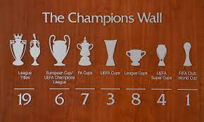

Liverpool's first trophy was the Lancashire League, which it won in the club's first season.
In 1901, the club won its first League title, while the nineteenth and most recent was in 2020.
Its first success in the FA Cup was in 1965. In terms of the number of trophies won, Liverpool's most successful decade was the 1980s,
when the club won six League titles, two FA Cups, four League Cups, one Football League Super Cup, five Charity Shields (one shared) and two European Cups.
The club has accumulated more top flight wins and points than any other English team.
Liverpool also has the highest average league finishing position (3.3) for the 50 year period to 2015 and second highest average league finishing position for the period 1900/1999 after Arsenal, with an average league placing of 8.7.
Liverpool is the most successful British club in international football with fourteen trophies, having won the European Cup/UEFA Champions League, UEFA's premier club competition, six times, an English record and only surpassed by Real Madrid and A.C. Milan.
Liverpool's fifth European Cup win, in 2005, meant that the club was awarded the trophy permanently and was also awarded a multiple winner badge.
Liverpool also hold the English record of three wins in the UEFA Cup, UEFA's secondary club competition.
Liverpool also hold the English record of four wins in the UEFA Super Cup.[171] In 2019, the club won the FIFA Club World Cup for the first time, and also became the first English club to win the international treble of Club World Cup, Champions League and UEFA Super Cup.
- Domestic
- League
- First Division/Premier League
Winners (19): 1900/01, 1905/06, 1921/22, 1922/23, 1946/47, 1963/64, 1965/66, 1972/73, 1975/76, 1976/77, 1978/79,
1979/80, 1981/82, 1982/83, 1983/84, 1985/86, 1987/88, 1989/90, 2019/20
- Second Division
Winners (4): 1893/94, 1895/96, 1904/05, 1961/62
- Cups
- FA Cup
Winners (7): 1964/65, 1973/74, 1985/86, 1988/89, 1991/92, 2000/01, 2005/06
- Football League Cup/EFL Cup
Winners (9): 1980/81, 1981/82, 1982/83, 1983/84, 1994/95, 2000/01, 2002/03, 2011/12, 2021/22
- Football League Super Cup
Winners (1): 1985/86
- FA Charity Shield/FA Community Shield
Winners (15): 1964*, 1965*, 1966, 1974, 1976, 1977*, 1979, 1980, 1982, 1986*, 1988, 1989, 1990*, 2001, 2006 (* shared)
- European
- European Cup/UEFA Champions League
Winners (6): 1976/77, 1977/78, 1980/81, 1983/84, 2004/05, 2018/19
- UEFA Cup
Winners (3): 1972/73, 1975/76, 2000/01
- European/UEFA Super Cup>
Winners (4): 1977, 2001, 2005, 2019
- Worldwide
- FIFA Club World Cup
Winners (1): 2019
- Doubles and Trebles
- Doubles:
League and FA Cup (1): 1985/86
League and League Cup (2): 1981/82, 1982/83
League and European Cup (1): 1976/77
League and UEFA Cup (2): 1972/73, 1975/76
League Cup and European Cup (1): 1980/81
- Trebles:
League, League Cup and European Cup (1): 1983/84
FA Cup, League Cup and UEFA Cup (1): 2000/01